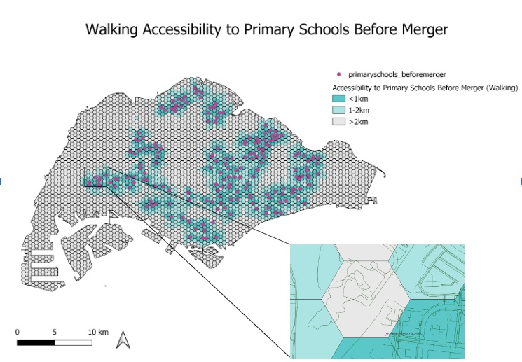

Analysis
1.0 Accessibility Analysis
1.1 Main Mode of Transport for Students
According to the Department of Statistics Singapore, the main mode of transport for primary school students is walking. For secondary school students, the main mode of transport is public buses. However, as conducting accessibility analysis by bus network is out of scope for the timeframe of our project, we have chosen to focus on driving and MRT accessibility. For post-secondary students such as Junior College, we have chosen to focus on driving and MRT accessibility as well.
Main Mode of Transport for Students (Source: Department of Statistics Singapore)
1.2 Distribution of Youth Population
The map above shows the distribution of the youth population (18 and below) across Singapore. There is a high concentration of youth living in two main areas. Firstly, the Northeast of Singapore where Punggol, Sengkang, and Fernvale are located. Secondly, the Eastern part of Singapore where Tampines is located. The top three subzones with the highest population of youth are Tampines East, Woodlands East and Fernvale.
Analysing the distribution of the youth population is important in determining the demand of schools, as schools should be located near to residents' homes, particularly primary schools. Subzones with a higher youth population should have a higher number of schools located within the vicinity to serve the residents.
These schools should be easily accessible to residents living in the different subzones either by car, public transport or foot. Should there be an area with high youth population but low accessibility to schools, efforts should be taken to increase accessibility to schools.
1.3 Accessibility Analysis to Primary Schools (Walking)
1.3.1 Before Merger

In Singapore, most of the roads are walkable except for the main roads and expressways. Hence, we should take into consideration all types of roads except the major roads, expressways, links to these roads, unclassified roads and bridleway that are path for horses. All other types of roads except for the aforementioned will be the network layer in determining the accessibility of hexagon centroids to primary schools.
There are 191 primary schools in Singapore before the 2019 merger. Most of the primary schools are concentrated in the housing estate areas and are well accessible to the children and parents living in the area. This is evident from the map as locations with primary schools are generally highly accessible by walking due to the extensive footpath and pedestrian walkway available for people to walk from different locations to the primary schools.
However, it can be observed that there is a hexagon centroid in the western area of Singapore that is quite inaccessible to Pioneer Primary School by walking. The shortest distance from the hexagon centroid to the nearest primary school via the walking path is 2.216km. Most of the walking paths around the primary schools are service roads which are for access to buildings, parking lots, etc, making it difficult to access by foot from the hexagon centroid. Although there are also some footway paths around the primary school, these paths are not well connected to each other, making it tough to walk to the school. For this reason, parents who send their children to Pioneer Primary School may prefer to drive or take public transport as it is more convenient. Residents living in this area may also experience lower priority for admission to primary schools.
1.3.2 After Merger
As seen from the figure above, school closures such as Balestier Hill Primary School and Da Qiao Primary School have resulted in a lower accessibility. This will be elaborated further in the next section.
1.4 Walking Accessibility Analysis to Primary Schools Before and After Merger (Bivariate Map)
Due to the large number and dense network of primary schools, general accessibility has not been impacted significantly. Areas with a high population of youth, such as Tampines East and Woodlands East are also not affected. However, there are three main areas that have experienced lower accessibility.
Firstly, the merger of Da Qiao Primary School and Jing Shan Primary School has resulted in a lower accessibility for Cheng San subzone, with the nearest primary school being more than 2 km away after the merger, whereas the nearest primary school was 1-2 km before the merger. This would result in residents in Cheng San having to walk a long distance to a nearby primary school, and they would also face lower priority for admission to nearby primary schools.
Secondly, the merger of Balestier Hill Primary School and Bendemeer Primary School has resulted in a lower accessibility for the Balestier subzone, with the nearest primary school now being 1-2 km away instead of within 1km previously. This is despite having several schools nearby, such as Hong Wen School and St. Andrew's Junior School. Residents in Balestier now also face lower priority when balloting for a primary school.
Thirdly, the merger of East Coast Primary School and Damai Primary School has resulted in a lower accessibility for the Kembangan area, with the nearest primary school being 1-2 km away, instead of within 1km previously. Similarly, residents now have lower priority for admission to nearby primary schools.
Residents in these areas all face lower priority to primary schools, representing spatial inequalities. If they are unable to relocate, they may face difficulties obtaining the primary school of their choice.
1.5 Driving Accessibility Analysis to Primary Schools Before and After Merger (Bivariate Map)
While walking is the main mode of transport for primary school students, there are still parents who would prefer to drive their children to school. As such, we have also analysed the change in driving accessibility before and after merger.
Overall, there is not much change in driving accessibility before and after merger. There are only two main areas that experienced a decrease in accessibility. Firstly, the Balestier subzone has experienced a decrease in accessibility due to the merger of Balestier Hill Primary School and Bendemeer Primary School. Several areas which previously had a primary school within 1 km of their area now have to walk 1-2 km to the nearest primary school. However, there are still several primary schools nearby, such as CHIJ Primary (Toa Payoh), Singapore Chinese Girls' Primary School and St Andrew's Junior School.
Secondly, with the merger of East Coast Primary School and Damai Primary School, an area in Kembangan now experiences lower accessibility, with the nearest primary school being 1-2 km, compared to within 1 km before the merger. However, it is only one small area that is affected, as there are other nearby schools such as Telok Kurau Primary School and Damai Primary School.
1.6 Accessibility Analysis to Primary Schools from Tengah
Aerial view of Tengah (Source: Housing Development Board)
Tengah is a new upcoming housing estate that will comprise 42,000 homes. Tengah will also hold Singapore's first car-free town centre, where walking and cycling are encouraged. Referring to the figure above, there will be five main districts in Tengah: Plantation, Garden, Park, Brickland and Forest Hill. As many Build-to-Order flats will be built in Tengah, the population would mostly comprise young couples and families, making it extremely important for good accessibility to schools.
Referring to the figure above, there are currently no primary schools located in Tengah. The walking accessibility to primary schools is extremely poor in Tengah, with most primary schools being more than 2 km away. The only exception would be the most southern area of Tengah, which has good walking and driving accessibility to Jurong Primary School.
Driving accessibility is slightly higher, with some areas in the western and southern region in Tengah being 2-5 km away from primary schools, and areas in the northeast region (Brickland District) being less than 2 km away. There are still areas with very poor walking and driving accessibility in the northern/central region of Tengah coloured in grey.
More primary schools would have to be built in Tengah to increase the accessibility to residents. If no primary schools are built, residents with cars may wish to stay in Brickland District (northeast), as they would have to drive less than 2km to reach the nearest primary school. For those who prefer to walk, they wish to stay in the southern region of Tengah (Plantation District), that is less than 1 km, or 1-2 km away from the nearest primary school by foot.
Referring to the figure above, there are currently no primary schools located in Tengah. The walking accessibility to primary schools is extremely poor in Tengah, with most primary schools being more than 2 km away. The only exception would be the most southern area of Tengah, which has good walking accessibility to Jurong Primary School (highlighted in red) and Princess Elizabeth Primary School (highlighted in blue).
More primary schools would have to be built in Tengah to increase the accessibility to residents. For young couples wanting to start a family, it would be best for them to stay in the most southern region of Tengah (Plantation District), that is less than 1 km, or 1-2 km away from the nearest primary school by foot.
1.7 Accessibility Analysis to Secondary Schools
From the maps we could observe that the geographic distribution of secondary schools is relatively dense. In 2019, there are only 3 pairs of secondary schools merged, those are East View Secondary & East Spring Secondary, Hong Kah Secondary & Jurongville Secondary, Shuqun Secondary & Yuhua Secondary.
1.7.1 Driving Accessibility
Among the three pairs of school mergers, two of them are located in the Jurong area. The first would be the merger of schools labelled 1 on the image above - Hong Kah Secondary School and Jurongville Secondary School. The two schools are in very close proximity to each other (within 1 hexagon (250m)), hence the merger of the two schools does not have significant impact on the accessibility.
The second would be the merger of the secondary schools labelled 2, ShuQun Secondary School and Yuhua Secondary School, where ShuQun Secondary School(located in Jurong East) has merged to Yuhua Secondary (located in Jurong West). The accessibility for residents in the Jurong East area has been slightly impacted. After the merger, the residents staying in the north part (within the red box) have to travel further to other secondary schools with the closure of the ShuQun.
1.7.1.1 Jurong East Accessibility After merge
1.7.2 Walking Accessibility

Similar as the driving accessibility, the walking accessibility for secondary school has not been impacted too much for residents near Hong Kah Secondary and ShuQun Secondary school.It is because for the mergers of secondary schools, only the pairs of school which geographically close to each other have been selected, meanwhile even with the school mergers, the numbers of secondary schools in Singapore is huge, there are many other secondary schools in each region where parents and secondary schools students could choose from.
1.8 Accessibility Analysis to Junior Colleges
1.8.1 Accessibility Analysis to Junior Colleges Before Merger (Walking and MRT)
For JCs, we used longer distance thresholds since there are less JCs in Singapore with older students that are willing and able to travel for longer distances to school. We kept the same 0 - 1 km, 1 - 2 km and more than 2 km thresholds for walking since most people will not want to walk longer than that if possible. We use a 0 - 3 km, 3 - 6 km and more than 6 km threshold for the MRT, which takes into account the distance of the whole trip from home to station to school. In this particular comparison, there is not much difference in accessibility before and after merger for JCs via walking or MRT. There is obviously a fall in accessibility for walking at the areas where JCs have merged, such as around Jurong Junior College in the west and Innova Junior College in the North as circled in red in the above images.
However, there is also an increase in accessibility around the country as new MRT stations open with time. Circled in green above are the Thompson East Coast line stations opened till now (Phase 1 and 2). There is a clear increase in accessibility to JCs in these areas as more train lines open up.
1.8.2 Accessibility Analysis to Junior Colleges Before Merger (Driving)
In terms of driving however, there is a large and obvious difference in accessibility when compared to walking and MRT distances. We use a 0 - 5 km, 5 - 8 km and more than 8 km threshold for this map.
Our first area of interest is around the Northern area of Singapore, where Innova Junior College was merged into Yishun Junior College. There is quite a large drop in accessibility in the area via driving as can be seen in the image below, where the dark green areas represent where shortest distance to a school has decreases from less than 5 km to 5 - 8 km, while the light green areas represent where shortest distance to a school has decreased from less than 5 km to more than 8 km. Woodlands East is affected quite a bit by this drop in accessibility, especially when it is the region with the 2nd highest population of young people which would be attending these schools in the future. It seems that merging Innova Junior College to Yishun Junior College was a poor idea, especially when the northern side already has so little Junior Colleges around.
On the Western side, where Jurong Junior College was merged into Pioneer Junior College. The loss in accessibility here is even more drastic than what happened in the North, with a much larger area's shortest distance to a JC increasing from less than 5 km to more than 8 km. In particular, Jurong West Central, one of the areas with a higher population of young people which will attend these schools in the future, is very heavily affected by the change. It was most definitely a bad idea to merge Jurong Junior College into Pioneer Junior College, which are not even that close to each other, leading to such a large loss in accessibility within the Jurong area.
There are other areas on the map with losses in accessibility due to the merger of Serangoon and Tampines Junior College, but the effect on the accessibility to their surroundings is not as drastic compared to the first 2 JCs. This is because they are relatively close to another JC via the road network, making the impact of the mergers not that big. Jurong and Innova JC are not that close to the JCs they were merged to, Pioneer and Yishun JC. This made the impact of their mergers way bigger. We can conclude from this analysis that the decision to merge these schools purely based off lower student intake levels was not a good idea, as they are further reducing accessibility to nearby regions in Singapore.